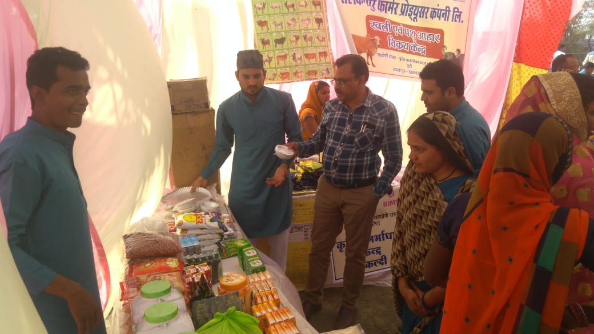
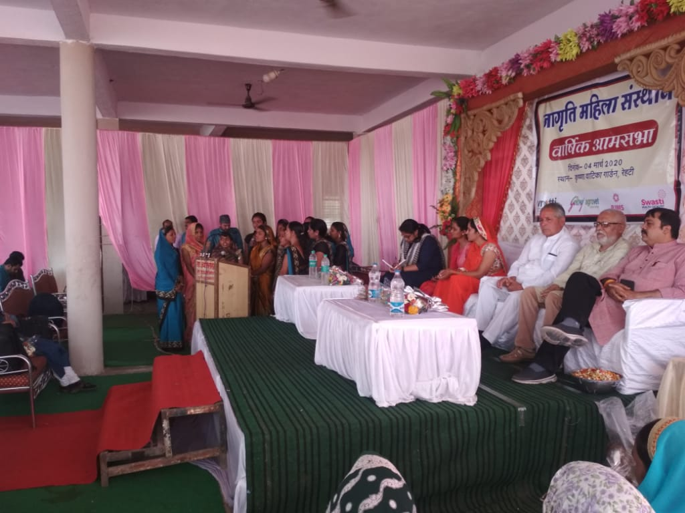
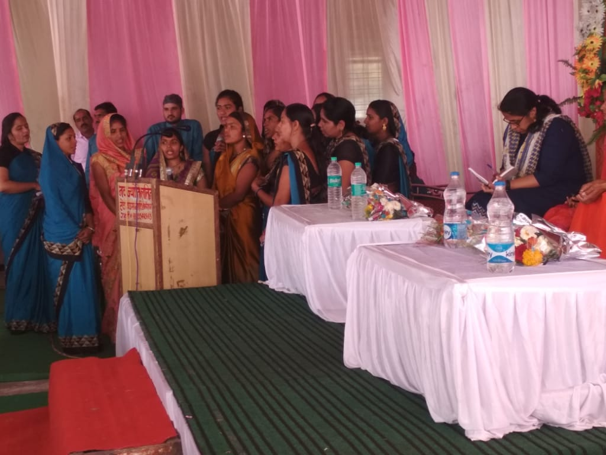
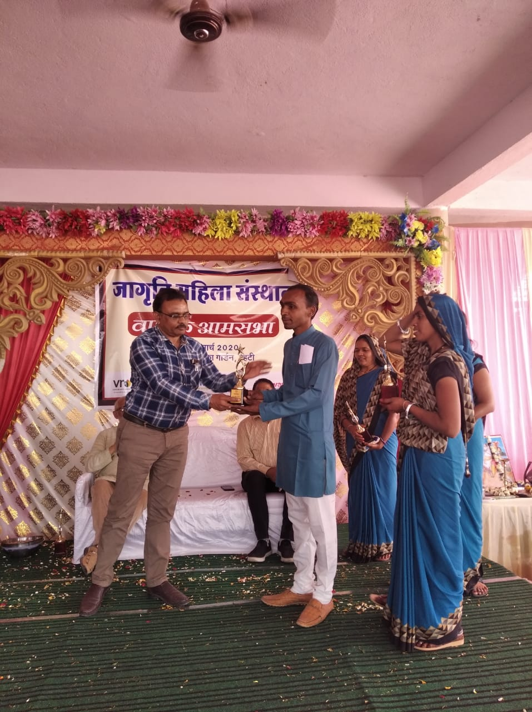

Swasti started efforts through various channels for the underprivileged community from August 15, 2017 in Rehati, Sehore district under the i4we program, coordinating with programs run by vrutti.Our selected villages of Rehati cluster fall under 2 blocks 1. Nasrullaganj, 2. Budhni,Swasti and Vrutti cover 25 villages, where the majority of inhabitants are marginalized or tribal farmers. Out of these 25 villages, 16 are majority tribal. The total tribal population of these villages is 11,036 families,under i4we. There are a total of 2044 families in these 25 villages, out of which 1273 families belong to SC / ST. Rehati area is considered to be a tribal dominated area of the district and due to the distance of about 80 kilometers from the district headquarters, people do not get many necessary information, facilities in a timely manner. For this reason this area was selected for the i4we program and needs to work for health, education, livelihood, unclean behavior change in this area.
I 4we program aims to keep people healthy and reduce health expenses and increase their livelihood opportunities so that they can invest for wellness.We have so far formed 178 SHG groups,our goal is to form 200 SHG groups which we will complete by October 2020, Above these groups formed a federation which is a registered federation and all these groups are members of the federation called Rehti Jagrit Mahila Sansthan.Rehti Jagriti Mahila Sansthan, a Society registered under the Society Act 1973, Rehti Jagriti Mahila Sansthan is a federation of Self Help Groups(SHGs) of women in Rehti, Sehore district in Madhya Pradesh. Rehti Jagriti Mahila Sansthan was established in the year January 2018 with support from Vrutti. Rehti Jagriti Mahila Sansthan works for improving the health and well being of rural women and their families in Rehti through different development intervention programs. Currently at present 178 SHGs consist of 1937 members. SHGs and its women members of Rehti Jagriti Mahila Sansthan require a variety of support and continued services for improving their health and well being. Services offered by the Jagriti Federation to its members include Social Protection, Health services, Livelihood promotion, Agri business, financial services, etc. For the past 12 months JMS have been promoting Grocery business activity with SHGs members.




Objectives of the Federation:-
To mobilization of women towards their social and economic empowerment.
To provide financial service to woman and their SHG’s for establishment of enterprises.
To organize educational, environmental & health and hygiene programs for weaker section of the community.
To facilitate linkages between SHGs and banks, govt. agencies/local Institutions.
To have better access to development information and marketing linkages
To help in achieving sustainability of SHGs.
To strengthen (through training, information, on-site support etc) the capacity of member-SHGs in one or more variety of fields such as bookkeeping, accounting, marketing, financial management, advocacy, bank linkage and others.
To engage in business activities at large scale.
To undertake marketing of the produce of the members of SHGs.
To improvement of livelihood of the weaker section of the community.